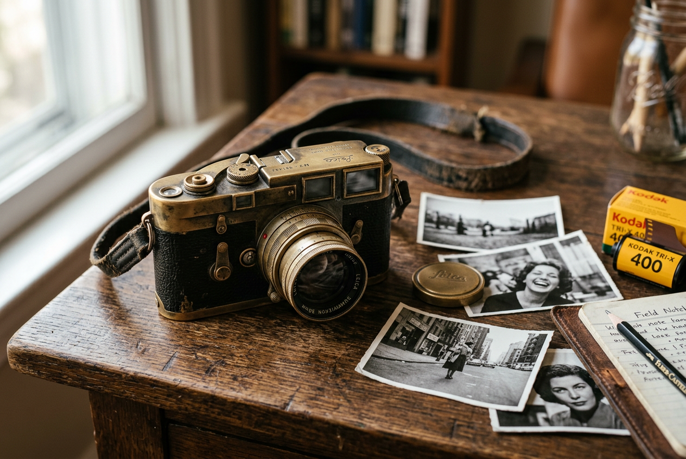

🎁 OBJECTS · 物品
Describing objects — from gadgets to gifts to family treasures — is a core skill in IELTS Speaking Part 2. Learn 5 angles to talk about any object you can think of.
📐 Physical Description · 外观描述
20 chunksThese chunks help you describe what an object looks like — its size, shape, colour, material, and visual character.
Sentence frames
Through My Grandfather's Lens: One Camera, Three Generations, a Thousand Stories

It's about the size of a paperback book, made of solid metal with leather panels that have aged to a deep chocolate brown. The colour has faded over time — what was once black is now a soft charcoal grey with silver edges peeking through. It has a certain worn charm that you simply can't fake. The texture is smooth but not slippery — it's one of those materials that feels better the more you use it. There are scratches on the base and a small dent on the corner, but every mark has a story behind it. This camera is, without exaggeration, unlike anything I've ever owned.
It originally belonged to my grandfather, who was a photographer in the 1950s and 60s. He used it to document village life in rural Guangdong — weddings, festivals, harvests, and quiet family moments that would otherwise have been lost to time. It was passed down to me on my 18th birthday — I'll never forget the way he handed it to me, with both hands, as if it were something sacred. He said: "This camera has seen more of life than most people ever will. Take care of it, and it'll take care of you."
“ This camera has seen more of life than most people ever will. Take care of it, and it'll take care of you. — My grandfather, handing me the camera on my 18th birthday
What sets it apart from modern cameras is everything. It's completely manual — no autofocus, no digital screen, no buttons that beep at you. Using it forces you to slow down. You have to think about the light, the composition, the moment. Every shot counts because you only have 36 frames on a roll. There's something deeply satisfying about the mechanical click of the shutter — it has a satisfying weight to it, both physically and metaphorically. In a world of instant everything, this camera stands out from the crowd because it demands patience. And that, oddly enough, is exactly why I treasure it.
It holds immense sentimental value for reasons that go far beyond its function. It's a tangible reminder of my childhood — every time I hold it, I can almost hear my grandfather's voice explaining aperture and shutter speed while I pretended to understand. It's been a constant companion through some of the most important moments of my life — I took it on my first solo trip, to university, to my best friend's wedding. When I'm feeling lost or overwhelmed, it serves as an emotional anchor — it grounds me and reminds me of what's important. It connects me to my grandfather in a way that photos never could. When I hold it, I feel like I'm holding his hand.
It's more than just an old camera — it's a piece of my family's history. Every scratch tells a story about a different chapter of our lives. The dent on the corner? That's from when my father dropped it while climbing a mountain in the 80s. The faded leather? Decades of being held, adjusted, and loved. I've taken it with me to over 10 countries, and in each one, I've captured moments that now exist both on film and in my memory. If there were a fire, it's the one thing I'd save — not my laptop, not my passport. This.
I'll keep it forever — and hopefully pass it on to my own children one day, with its story intact. In terms of craftsmanship, it has no equal — you simply don't find this level of quality in modern production. It was built to last and has stood the test of time in a way that few objects do. The sentimental value far outweighs any monetary worth — you could offer me a hundred times what it cost and I wouldn't sell it. More than anything, this camera taught me that the best things aren't the newest or the fastest. They're the ones with stories.
Case Study: Grandfather's Camera — The 4-in-1 Objects Adaptor
One object. Four different cue cards. Same core description — different angles.
The key insight: One family camera — 60 years old, passed down through generations, full of stories — can answer multiple Part 2 prompts. You just change the emphasis, the opening, and which chunks you deploy.
🎯 Quick Drill — Full Cue Card Practice
- • What it is
- • How long it has been in your family
- • What it looks like
Jot down keywords for each bullet. Use the 1-min timer to prep, then deliver a full 2-minute response using at least 3 chunks from above.